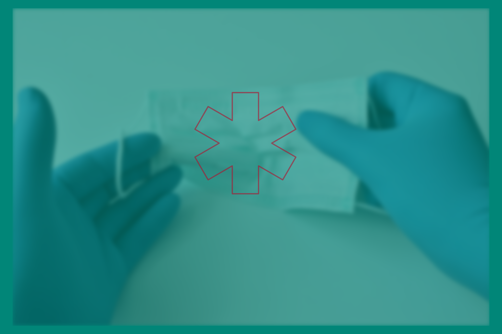
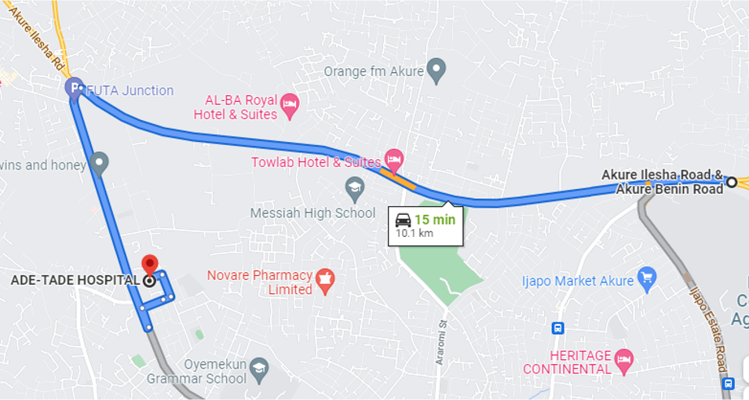

Surgery & Emergency services
Surgery & Emergency services
at
Ade-Tade Hospital
Our compassionate team is here to support you and take care of you during unexpected and often frightening health events.
Surgery
We understand that learning that you need surgery can bring a lot of worries. That is why we make sure to explain what to expect before, during, and after your procedure, so that you can be prepared.
We have over 40 years of experience and have successfully performed a wide variety of surgeries including:
- Appendix removal
- Hernia repair
- Skin grafting
- Wound stitching
- Wound debridement
- Treatment of burns
- Cesarean section
- Drainage of abscess
- Tendon release
- Breast lump removal
- Bone fracture repair
- Lipoma removal
- Fibroid removal
- Circumcision
and more.
Emergency
We are always on standby to diagnose and treat severe or life-threatening conditions.
We are conveniently located off Olusegun Obasanjo Way, opposite Ilesha Motor Park, only a few kilometers from the Benin-Akure-Ilesha highway.
To learn more, please call us at 0806-635-8086.
